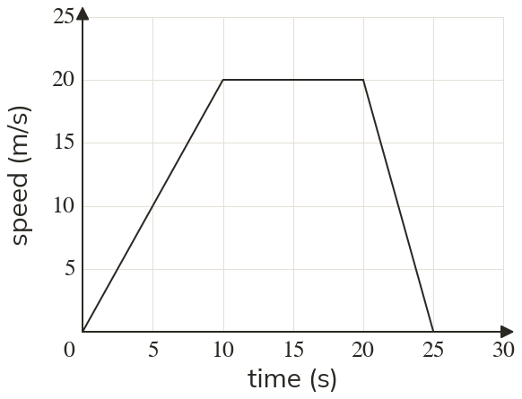

Westonbirt Maths · Direct and Inverse Proportion
Speed-Time Graphs
Name: ______________________ Date: ____________
1
Find the acceleration in the first stage and the deceleration in the last stage.
2
A stage rises from to in seconds and m/s. Find the acceleration.
3
A car speeds up from rest at m/s² for seconds. What speed does it reach?
4
A train slows from m/s to m/s in seconds. Find the deceleration.
5
Which stage has the greater acceleration: to or to ?
Ext
A cyclist speeds up from rest at m/s² for seconds, then slows to a stop in seconds. Find the deceleration.
